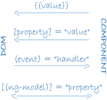

Simple
import { ReactiveFormsModule } from '@angular/forms';
@NgModule({
imports: [
ReactiveFormsModule
]
})
import { FormControl } from '@angular/forms';
export class NameEditorComponent {
name = new FormControl('');
}
this.name.value;
this.name.setValue('Nancy');
[formControl]="name"
// simple-reactive-form.component.ts
import { Component } from '@angular/core';
import { FormControl } from '@angular/forms';
@Component({
selector: 'app-name-editor',
templateUrl: './name-editor.component.html',
styleUrls: ['./name-editor.component.css']
})
export class NameEditorComponent {
name = new FormControl('');
updateName(): void {
this.name.setValue('Nancy');
}
}
// simple-reactive-form.component.html
<label> Name: <input type="text" [formControl]="name" /> </label>
<p>Value: {{ name.value }}</p>
<p><button (click)="updateName()">Update Name</button></p>
import { FormGroup, FormControl } from '@angular/forms';
profileForm = new FormGroup({
firstName: new FormControl(''),
lastName: new FormControl(''),
});
<form [formGroup]="profileForm">
<input type="text" formControlName="firstName">
<form [formGroup]="profileForm" (ngSubmit)="onSubmit()"></form>
onSubmit() {
// TODO: Use EventEmitter with form value
console.warn(this.profileForm.value);
}
<button type="submit" [disabled]="!profileForm.valid">Submit</button>
this.profileForm.patchValue({
firstName: 'Nancy',
address: {
street: '123 Drew Street'
}
});
Create a nested group.
import { FormGroup, FormControl } from '@angular/forms';
profileForm = new FormGroup({
firstName: new FormControl(''),
lastName: new FormControl(''),
address: new FormGroup({
street: new FormControl(''),
city: new FormControl(''),
state: new FormControl(''),
zip: new FormControl('')
})
});
<div formGroupName="address">
<input type="text" formControlName="street">
<input type="text" formControlName="city">
import { FormBuilder } from '@angular/forms';
constructor(private fb: FormBuilder) { }
profileForm = this.fb.group({
firstName: [''],
lastName: [''],
address: this.fb.group({
street: [''],
city: [''],
state: [''],
zip: ['']
})
})
import { Validators } from '@angular/forms';
profileForm = this.fb.group({
firstName: ['', Validators.required],
lastName: [''],
address: this.fb.group({
street: [''],
city: [''],
state: [''],
zip: ['']
}),
});
<input type="text" formControlName="firstName" required>
<p> Form Status: {{ profileForm.status }} </p>
Best Practices:-
ng generate module moduleName
ng g m moduleName
ng generate component componentName
ng g c componentName
ng generate service serviceName
ng test --watch=false --source-map --code-coverage
The basic building blocks of an Angular application are NgModules, which provide a compilation context for components. NgModules collect related code into functional sets; an Angular app is defined by a set of NgModules. An app always has at least a root module that enables bootstrapping, and typically has many more feature modules.
npm uninstall -g typescript
npm uninstall -g typings
npm uninstall -g @angular/cli
npm cache clean --force
npm install -g @angular/cli@latest
npm install -g typescript
npm install -g typings
ng v
ng help
ng new my-app
cd my-app
ng serve --open
Components are the fundamental building blocks of Angular applications. They display data on the screen, listen for user input, and take action based on that input.
// Include in app.module.ts file
// import { ComponentClassName } from 'filePath';
import { HeroesComponent } from './heroes/heroes.component';
declarations: [
HeroesComponent
],
// declared in the @NgModule.declarations array
<div class="special" [class.special]="!isSpecial">This one is not so special</div>
<button [style.background-color]="canSave ? 'cyan': 'grey'" >Save</button>
// set Reference variable with hash #
<form (ngSubmit)="onSubmit(heroForm)" #heroForm="ngForm"></form>
<div [hidden]="!heroForm.form.valid">{{submitMessage}}</div>
import { Component, Input } from '@angular/core';
export class HeroChildComponent {
@Input() hero: type;
}
{{hero}}
<h1>{{title}}</h1>) are Angular's interpolation binding syntax.
// Define object modal in new file
export class Hero {
id: number;
name: string;
}
// import object modal in your file
import { Hero } from '../hero';
// add type with colon :
hero: Hero = {
id: 1,
name: 'Windstorm'
};
// src/app/mock-heroes.ts
import { Hero } from './hero';
export const HEROES: Hero[] = [
{ id: 11, name: 'Mr. Nice' },
{ id: 12, name: 'Narco' },
{ id: 13, name: 'Bombasto' },
{ id: 14, name: 'Celeritas' },
{ id: 15, name: 'Magneta' },
{ id: 16, name: 'RubberMan' },
{ id: 17, name: 'Dynama' },
{ id: 18, name: 'Dr IQ' },
{ id: 19, name: 'Magma' },
{ id: 20, name: 'Tornado' }
];
// It belongs to the optional FormsModule and you must import it in (app.module.ts).
// import { FormsModule } from '@angular/forms';
// imports: [
// FormsModule
// ]
<label>name:
<input [(ngModel)]="hero.name" placeholder="name">
</label>
<li *ngFor="let hero of heroes"></li>
<div *ngIf="selectedHero"></div>
// in component.html
<li (click)="onSelect($event)">
// in component.ts
onSelect($event): void {
//define task
}
Dependency injection is an important application design pattern. Angular has its own Dependency injection framework, which is typically used in the design of Angular applications to increase their efficiency and modularity.
Dependencies are services or objects that a class needs to perform its function. Dependency injection is a coding pattern in which a class asks for dependencies from external sources rather than creating them itself.
In Angular, the Dependency injection framework provides declared dependencies to a class when that class is instantiated.
// Service imports the Angular Injectable symbol and annotates the class with the @Injectable() decorator. This marks
// the class as one that participates in the dependency injection system.
import { Injectable } from '@angular/core';
@Injectable({
providedIn: 'root',
})
export class HeroService {
constructor() { }
}
A service registers a provider with the root injector for your service by including provider metadata in the @Injectable decorator. When you provide the service at the root level, Angular creates a single, shared instance of HeroService and injects into any class that asks for it. Registering the provider in the @Injectable metadata also allows Angular to optimize an app by removing the service if it turns out not to be used after all.
constructor(private heroService: HeroServic)
import { Observable } from 'rxjs';
getHeroes(): Observable {
return of(HEROES);
}
getHeroes(): void {
this.heroService.getHeroes()
.subscribe(heroes => this.heroes = heroes);
}
// --flat puts the file in src/app instead of its own folder.
// --module=app tells the CLI to register it in the imports array of the AppModule.
ng generate module app-routing --flat --module=app
// app-routing.module.ts
import { NgModule } from '@angular/core';
import { RouterModule, Routes } from '@angular/router';
import { DashboardComponent } from './dashboard/dashboard.component';
import { HeroesComponent } from './heroes/heroes.component';
import { HeroDetailComponent } from './hero-detail/hero-detail.component';
const routes: Routes = [
{ path: '', redirectTo: '/dashboard', pathMatch: 'full' },
{ path: 'dashboard', component: DashboardComponent },
{ path: 'detail/:id', component: HeroDetailComponent },
{ path: 'heroes', component: HeroListComponent, data: { title: 'Heroes List' } },
{ path: 'heroes', component: HeroesComponent }
];
@NgModule({
imports: [ RouterModule.forRoot(routes) ],
exports: [ RouterModule ]
})
export class AppRoutingModule {}
// app.module.ts
import { AppRoutingModule } from './app-routing.module';
@NgModule({
imports: [
AppRoutingModule
]
})
The RouterOutlet is a directive from the router library that is used like a component. It acts as a placeholder that marks the spot in the template where the router should display the components for that outlet.
// Put where you want to print routing component
<router-outlet></router-outlet>
// Put in the navigation component
<a routerLink="/detail/{{hero.id}} " routerLinkActive="active" >Menu1</a>
<a routerLink="/detail/{{hero.id}} " [routerLinkActive]="'active fluffy'" >Menu1</a>
<li><a routerLink="/detail/{{hero.id}} " routerLinkActive="active" >Menu2</a>
<ul>
<li><a routerLink="/detail/{{hero.id}} " routerLinkActive="active" [routerLinkActiveOptions]="{ exact: true }">Menu2.1</a></li>
</ul>
</li>
HttpClient is Angular's mechanism for communicating with a remote server over HTTP.
To make HttpClient available everywhere in the app, import 'HttpClientModule' inside app.module.ts file
// import inside app.module.ts file
import { HttpClientModule } from '@angular/common/http';
// 1. step
import { HttpClient, HttpHeaders } from '@angular/common/http';
// 2. step
constructor( private http: HttpClient)
//3. step
// (this.http.get())
// this.http.put(httpUrl, httpData, httpOptions)
getHeroes (): Observable<Hero[]> {
return this.http.get<Hero[]>(this.heroesUrl)
}
Interpolation is a special syntax that Angular converts into a property binding
My current hero is {{JS expression}}
Interpolation Property (One-way from data source to view target )
{{expression}}
[target]="expression"
bind-target="expression"
Event
(target)="statement"
on-target="statement"
Angular apps are modular and Angular has its own modularity system called NgModules. NgModules are containers for a cohesive block of code dedicated to an application domain, a workflow, or a closely related set of capabilities. They can contain components, service providers, and other code files whose scope is defined by the containing NgModule. They can import functionality that is exported from other NgModules, and export selected functionality for use by other NgModules.
Every Angular app has at least one NgModule class, the root module, which is conventionally named AppModule and resides in a file named app.module.ts. You launch your app by bootstrapping the root NgModule.
The root NgModule for an app is so named because it can include child NgModules in a hierarchy of any depth.
An NgModule is defined by a class decorated with @NgModule().
import { NgModule } from '@angular/core';
import { BrowserModule } from '@angular/platform-browser';
@NgModule({
imports: [ BrowserModule ],
providers: [ Logger ],
declarations: [ AppComponent ],
exports: [ AppComponent ],
bootstrap: [ AppComponent ]
})
export class AppModule { }
Individual components define and control a patch of screen called a view. Component class interacts with the view through an API of properties and methods.
import { Component } from '@angular/core';
@Component({
selector: 'app-root',
templateUrl: './app.component.html',
styleUrls: ['./app.component.scss']
})
export class AppComponent {
title = 'starter-app';
}
For example, HeroListComponent has a heroes property that holds an array of heroes. Its selectHero() method sets a selectedHero property when the user clicks to choose a hero from that list. The component acquires the heroes from a service, which is a TypeScript parameter property on the constructor. The service is provided to the component through the dependency injection system.
import { Component } from '@angular/core';
export class HeroListComponent implements OnInit {
heroes: Hero[];
selectedHero: Hero;
constructor(private service: HeroService) { }
ngOnInit() {
this.heroes = this.service.getHeroes();
}
selectHero(hero: Hero) { this.selectedHero = hero; }
}
The metadata for a component tells Angular where to get the major building blocks that it needs to create and present the component and its view. In particular, it associates a template with the component, either directly with inline code, or by reference. Together, the component and its template describe a view.
The @Component decorator identifies the class immediately below it as a component class, and specifies its metadata. Class is not a component until you mark it as one with the @Component decorator.
@Component({
selector: 'app-hero-list',
templateUrl: './hero-list.component.html',
providers: [ HeroService ]
})
export class HeroListComponent implements OnInit {
/* . . . */
}
A template is a form of HTML that tells Angular how to render the component.
A template looks like regular HTML, except that it also contains Angular template syntax, which alters the HTML based on your app's logic and the state of app and DOM data. Template can use data binding to coordinate the app and DOM data, pipes to transform data before it is displayed, and directives to apply app logic to what gets displayed.
Angular supports two-way data binding, a mechanism for coordinating the parts of a template with the parts of a component. Add binding markup to the template HTML to tell Angular how to connect both sides.
The following diagram shows the four forms of data binding markup. Each form has a direction: to the DOM, from the DOM, or both.

<li>{{hero.name}}</li>
<app-hero-detail [hero]="selectedHero"></app-hero-detail>
<li (click)="selectHero(hero)"></li>
<input [(ngModel)]="hero.name"> <!-- two-way data binding -->
Two-way data binding (used mainly in template-driven forms) combines property and event binding in a single notation.
In two-way binding, a data property value flows to the input box from the component as with property binding. The user's changes also flow back to the component, resetting the property to the latest value, as with event binding.
Angular processes all data bindings once for each JavaScript event cycle, from the root of the application component tree through all child components.
Data binding plays an important role in communication between a template and its component, and is also important for communication between parent and child components.

Angular pipes let you declare display-value transformations in your template HTML. A class with the @Pipe decorator defines a function that transforms input values to output values for display in a view.
Angular defines various pipes, such as the date pipe and currency pipe; for a complete list, see the Pipes API list. You can also define new pipes.
To specify a value transformation in an HTML template, use the pipe operator (|).
{{interpolated_value | pipe_name}}
You can chain pipes, sending the output of one pipe function to be transformed by another pipe function. A pipe can also take arguments that control how it performs its transformation.
<!-- Default format: output 'Jun 15, 2015'-->
<p>Today is {{today | date}}</p>
<!-- fullDate format: output 'Monday, June 15, 2015'-->
<p>The date is {{today | date:'fullDate'}}</p>
<!-- shortTime format: output '9:43 AM'-->
<p>The time is {{today | date:'shortTime'}}</p>
Angular templates are dynamic. When Angular renders them, it transforms the DOM according to the instructions given by directives. A directive is a class with a @Directive() decorator.
A component is technically a directive. However, components are so distinctive and central to Angular applications that Angular defines the @Component() decorator, which extends the @Directive() decorator with template-oriented features.
There are two other kinds of directives: structural and attribute.
Structural directives alter layout by adding, removing, and replacing elements in the DOM. The example template uses two built-in structural directives to add application logic to how the view is rendered. 1. *ngFor 2. *ngIf
<li *ngFor="let hero of heroes"></li>
<app-hero-detail *ngIf="selectedHero"></app-hero-detail>
Attribute directives alter the appearance or behavior of an existing element. In templates they look like regular HTML attributes, hence the name.
The ngModel directive, which implements two-way data binding, is an example of an attribute
directive.
<input [(ngModel)]="hero.name">
ng generate service shared/services
//services.service.ts
import { Injectable } from '@angular/core';
@Injectable({
providedIn: 'root'
})
export class ServicesService {
constructor() { }
}
// src/app/heroes/hero-list.component
import { Component } from '@angular/core';
import { Hero } from './hero';
import { HeroService } from './hero.service';
@Component({
selector: 'app-hero-list',
template: `
{{hero.id}} - {{hero.name}}
`
})
export class HeroListComponent {
heroes: Hero[];
constructor(heroService: HeroService) {
this.heroes = heroService.getHeroes();
}
}
Angular distinguishes components from services to increase modularity and reusability. By separating a component's view-related functionality from other kinds of processing, you can make your component classes lean and efficient.
A component can delegate certain tasks to services, such as fetching data from the server, validating user input, or logging directly to the console. By defining such processing tasks in an injectable service class, you make those tasks available to any component.
To define a class as a service in Angular, use the @Injectable() decorator to provide the metadata that allows Angular to inject it into a component as a dependency.
Use the @Injectable() decorator to indicate that a component or other class (such as another service, a pipe, or an NgModule) has a dependency.
For any dependency that you need in your app, you must register a provider with the app's injector, so that the injector can use the provider to create new instances.
When Angular creates a new instance of a component class, it determines which services or other dependencies that component needs by looking at the constructor parameter types. For example, the constructor of HeroListComponent needs HeroService.
constructor(private service: HeroService) { }
When Angular discovers that a component depends on a service, it first checks if the injector has any existing instances of that service. If a requested service instance doesn't yet exist, the injector makes one using the registered provider, and adds it to the injector before returning the service to Angular.
When all requested services have been resolved and returned, Angular can call the component's constructor with those services as arguments.
The process of HeroService injection looks something like this.

You must register at least one provider of any service you are going to use. The provider can be part of the service's own metadata, making that service available everywhere, or you can register providers with specific modules or components. You register providers in the metadata of the service (in the @Injectable() decorator), or in the @NgModule() or @Component() metadata
@Injectable({
providedIn: 'root',
})
When you provide the service at the root level, Angular creates a single, shared instance of HeroService and injects it into any class that asks for it. Registering the provider in the @Injectable() metadata also allows Angular to optimize an app by removing the service from the compiled app if it isn't used.
@NgModule({
providers: [
BackendService,
Logger
],
...
})
@Component({
selector: 'app-hero-list',
templateUrl: './hero-list.component.html',
providers: [ HeroService ]
})
Angular provides two different approaches to handling user input through forms: reactive and template-driven. Reactive and template-driven forms process and manage form data differently. Each offers different advantages.
The table below summarizes the key differences between reactive and template-driven forms.
| Reactive | Template-driven | |
|---|---|---|
| Setup (form model) | More explicit, created in component class | Less explicit, created by directives |
| Data model | Structured | Unstructured |
| Predictability | Synchronous | Asynchronous |
| Form validation | Functions | Directives |
| Mutability | Immutable | Mutable |
| Scalability | Low-level API access | Abstraction on top of APIs |
Reactive and template-driven forms both use a form model to track value changes between Angular forms and form input elements.
With reactive forms, the form model is explicitly defined in the component class. The reactive form directive (in this case, FormControlDirective) then links the existing FormControl instance to a specific form element in the view using a value accessor (ControlValueAccessor instance).
import { Component } from '@angular/core';
import { FormControl } from '@angular/forms';
@Component({
selector: 'app-reactive-favorite-color',
template: `
Favorite Color: <input type="text" [formControl]="favoriteColorControl">
`
})
export class FavoriteColorComponent {
favoriteColorControl = new FormControl('');
}
In reactive forms each form element in the view is directly linked to a form model (FormControl instance). Updates from the view to the model and from the model to the view are synchronous and aren't dependent on the UI rendered. The diagrams below use the same favorite color example to demonstrate how data flows when an input field's value is changed from the view and then from the model.
The steps below outline the data flow from view to model.
The steps below outline the data flow from model to view.
The template-driven form directive NgModel is responsible for creating and managing the FormControl instance for a given form element.
import { Component } from '@angular/core';
@Component({
selector: 'app-template-favorite-color',
template: `
Favorite Color: <input type="text" [(ngModel)]="favoriteColor">
`
})
export class FavoriteColorComponent {
favoriteColor = '';
}
Reactive forms provide a model-driven approach to handling form inputs whose values change over time. Reactive forms use an explicit and immutable approach to managing the state of a form at a given point in time. Each change to the form state returns a new state, which maintains the integrity of the model between changes. Reactive forms are built around observable streams, where form inputs and values are provided as streams of input values, which can be accessed synchronously.
formControl binding provided by FormControlDirective
included in ReactiveFormsModule.
import { ReactiveFormsModule } from '@angular/forms';
@NgModule({
imports: [
ReactiveFormsModule
],
})
import { Component } from '@angular/core';
import { FormControl } from '@angular/forms';
@Component({
selector: 'app-name-editor',
templateUrl: './name-editor.component.html',
styleUrls: ['./name-editor.component.css']
})
export class NameEditorComponent {
name = new FormControl('');
}
<label> Name: <input type="text" [formControl]="name"> </label>
Reactive forms provide a model-driven approach to handling form inputs whose values change over time.
Reactive forms use an explicit and immutable approach to managing the state of a form at a given point in time. Each change to the form state returns a new state, which maintains the integrity of the model between changes. Reactive forms are built around observable streams, where form inputs and values are provided as streams of input values, which can be accessed synchronously.
Reactive forms differ from template-driven forms in distinct ways. Reactive forms provide more predictability with synchronous access to the data model, immutability with observable operators, and change tracking through observable streams. If you prefer direct access to modify data in your template, template-driven forms are less explicit because they rely on directives embedded in the template, along with mutable data to track changes asynchronously.
This section describes how to add a single form control.
1. To use reactive forms, import ReactiveFormsModule from the @angular/forms package and add it to your NgModule's imports array.
//src/app/app.module.ts
import { ReactiveFormsModule } from '@angular/forms';
@NgModule({
imports: [
// other imports ...
ReactiveFormsModule
],
})
export class AppModule { }
2. To register a single form control, import the FormControl class into your component and create a new instance of the form control to save as a class property.
//src/app/name-editor/name-editor.component.ts
import { Component } from '@angular/core';
import { FormControl } from '@angular/forms';
@Component({
selector: 'app-name-editor',
templateUrl: './name-editor.component.html',
styleUrls: ['./name-editor.component.css']
})
export class NameEditorComponent {
name = new FormControl('');
}
3. After you create the control in the component class, you must associate it with a form control element in the template. Update the template with the form control using the formControl binding provided by FormControlDirective included in ReactiveFormsModule.
<label>
Name:
<input type="text" [formControl]="name">
</label>
4. How to display
<p>
Value: {{ name.value }}
</p>
5. Replacing a form control value
A form control instance provides a setValue() method that updates the value of the form control and validates the structure of the value provided against the control's structure.
updateName() {
this.name.setValue('Nancy');
}
Step 1: import the FormGroup and FormControl classes from the @angular/forms package and Creating a FormGroup instance
import { Component } from '@angular/core';
import { FormGroup, FormControl } from '@angular/forms';
@Component({
selector: 'app-profile-editor',
templateUrl: './profile-editor.component.html',
styleUrls: ['./profile-editor.component.css']
})
export class ProfileEditorComponent {
profileForm = new FormGroup({
firstName: new FormControl(''),
lastName: new FormControl(''),
});
}
The individual form controls are now collected within a group. A FormGroup instance provides its model value as an object reduced from the values of each control in the group. A form group instance has the same properties (such as value and untouched) and methods (such as setValue()) as a form control instance.
Step 2: Associating the FormGroup model and view
<form [formGroup]="profileForm">
<label>
First Name:
<input type="text" formControlName="firstName">
</label>
<label>
Last Name:
<input type="text" formControlName="lastName">
</label>
</form>
<form [formGroup]="profileForm" (ngSubmit)="onSubmit()">
onSubmit() {
// TODO: Use EventEmitter with form value
console.warn(this.profileForm.value);
}
<button type="submit" [disabled]="!profileForm.valid">Submit</button>
import { Component } from '@angular/core';
import { FormGroup, FormControl } from '@angular/forms';
@Component({
selector: 'app-profile-editor',
templateUrl: './profile-editor.component.html',
styleUrls: ['./profile-editor.component.css']
})
export class ProfileEditorComponent {
profileForm = new FormGroup({
firstName: new FormControl(''),
lastName: new FormControl(''),
address: new FormGroup({
street: new FormControl(''),
city: new FormControl(''),
state: new FormControl(''),
zip: new FormControl('')
})
});
}
<div formGroupName="address">
<h3>Address</h3>
<label> Street:
<input type="text" formControlName="street">
</label>
<label> City:
<input type="text" formControlName="city">
</label>
<label> State:
<input type="text" formControlName="state">
</label>
<label> Zip Code:
<input type="text" formControlName="zip">
</label>
</div>
When updating the value for a form group instance that contains multiple controls, you may only want to update parts of the model.
There are two ways to update the model value:
The strict checks of the setValue() method help catch nesting errors in complex forms, while patchValue() fails silently on those errors.
updateProfile() {
this.profileForm.patchValue({
firstName: 'Nancy',
address: {
street: '123 Drew Street'
}
});
}
Creating form control instances manually can become repetitive when dealing with multiple forms. The FormBuilder service provides convenient methods for generating controls.
import { FormBuilder } from '@angular/forms';
The FormBuilder service is an injectable provider that is provided with the reactive forms module. Inject this dependency by adding it to the component constructor.
constructor(private fb: FormBuilder) { }
The FormBuilder service has three methods: control(), group(), and array(). These are factory methods for generating instances in your component classes including form controls, form groups, and form arrays.
import { Component } from '@angular/core';
import { FormBuilder } from '@angular/forms';
@Component({
selector: 'app-profile-editor',
templateUrl: './profile-editor.component.html',
styleUrls: ['./profile-editor.component.css']
})
export class ProfileEditorComponent {
profileForm = this.fb.group({
firstName: [''],
lastName: [''],
address: this.fb.group({
street: [''],
city: [''],
state: [''],
zip: ['']
}),
});
constructor(private fb: FormBuilder) { }
}
FormArray is an alternative to FormGroup for managing any number of unnamed controls. You don't need to define a key for each control by name, so this is a great option if you don't know the number of child values in advance.
import { FormArray } from '@angular/forms';
You can initialize a form array with any number of controls, from zero to many, by defining them in an array. Add an aliases property to the form group instance for profileForm to define the form array.
Use the FormBuilder.array() method to define the array, and the FormBuilder.control() method to populate the array with an initial control.
profileForm = this.fb.group({
firstName: ['', Validators.required],
lastName: [''],
address: this.fb.group({
street: [''],
city: [''],
state: [''],
zip: ['']
}),
aliases: this.fb.array([
this.fb.control('')
])
});
Use the getter syntax to create an aliases class property to retrieve the alias's form array control from the parent form group.
get aliases() {
return this.profileForm.get('aliases') as FormArray;
}
Define a method to dynamically insert an alias control into the alias's form array. The FormArray.push() method inserts the control as a new item in the array.
addAlias() {
this.aliases.push(this.fb.control(''));
}
To attach the aliases from your form model, you must add it to the template. Similar to the formGroupName input provided by FormGroupNameDirective, formArrayName binds communication from the form array instance to the template with FormArrayNameDirective.
import { Validators } from '@angular/forms';
profileForm = this.fb.group({
firstName: ['', Validators.required],
lastName: [''],
address: this.fb.group({
street: [''],
city: [''],
state: [''],
zip: ['']
}),
});
<p> Form Status: {{ profileForm.status }} </p>